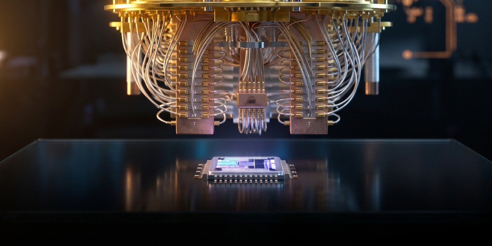

Geekotidien · Édition du 16 novembre 2026
IA circuits quantiques
Claude Mythos 5 conçoit des circuits quantiques moins coûteux

Anthropic annonce que Claude Mythos 5 a conçu des circuits quantiques plus économes.
Sur 8 tâches, 7 circuits sont meilleurs. Leur coût est divisé par 4,1 à 39 selon les cas.
Le résultat repose sur l'annonce d'Anthropic et n'a pas été évalué par les pairs.
Le + : L'étude n'a pas été évaluée par les pairs et ne repose que sur des simulations.